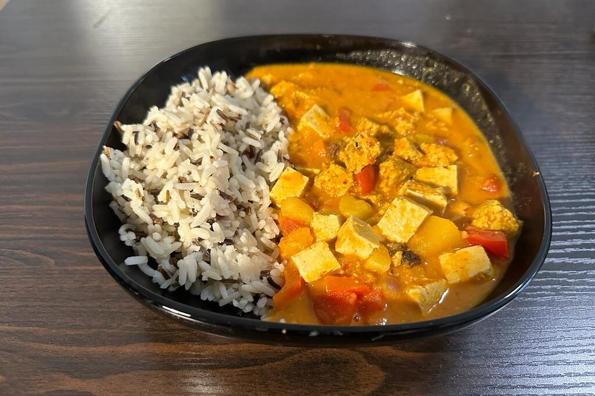

Ingredients
- 400g butternut squash
- 400ml low fat coconut milk
- 2 tbsp soy sauce
- 2 medium potatoes
- 1 1/2 tsp sambala olek
- 1 red onion
- 2 garlic cloves
- 3 tbsp thai red curry paste
- 1 carrot
- 2 bell peppers
- vegtable oil
- 150 ml water
- 200g of wild rice
- Coriander (topping)
- Cashews (topping)
Instructions
- Cut the onions, carrot, potatoes and butternut squash into small pieces
- Put the onion in a pan with a bit of oil and saute for 3 minutes
- Then add splash of water and the garlic and cook for another two minutes
- Add the curry paste, carrot, potatoes and the sqaush and stir for 1 minute until everything is well mixed
- Add the water and bring it to a boil, then let it simmer for 10 minutes
- Add the rest of the ingredients and cook it for 6 minutes or until all the vegtables are tender
- Serve it with some rice and top it off with coriander and cashews if you like